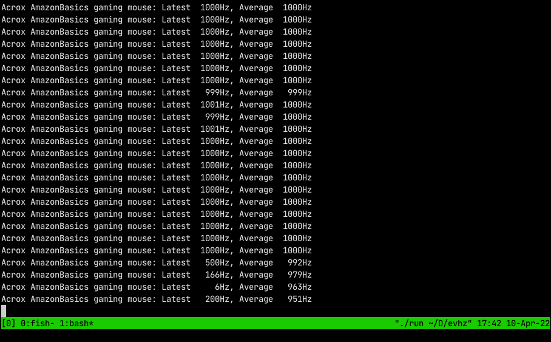
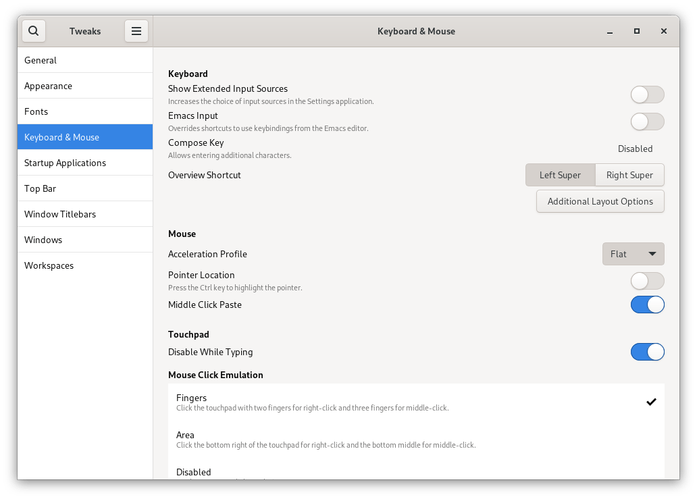

Blog / Gaming mice on Linux
Recently, I purchased a wireless mouse that just didn’t feel right on screen, the pointer felt both too fast and sluggish at the same time.
My first port-of-call as with any Linux issue is the Arch wiki where I learnt about Mouse polling rate, the rate at which the OS asks the Mouse for its position.
Using the great little utility evhz I was able to determine the new mouse had a polling rate of 125hz, which when used on my 165hz display resulted in the sluggish behaviour I was experiencing.
By switching to a cheaper wired gaming mouse spec’ed at up to 1000hz, I could increase the polling rate to 500hz, but what was happing to the other 500hz? The Arch wiki had the answer, a known kernel bug that can cause polling rates to be halved. The solution was to bypass the monitor’s USB hub and plug the mouse directly into a USB port on the motherboard. With the USB hub bypassed, I was able to reach the full 1000hz polling rate and a smooth mouse motion on screen.

One final improvement and one of personal preference is to disable mouse smoothing on Gnome. There is an option in the Gnome Tweaks tool to customize the “Acceleration Profile” which defaults to “Default” (smoothing). Changing the profile to “Flat” removes mouse smoothing.
